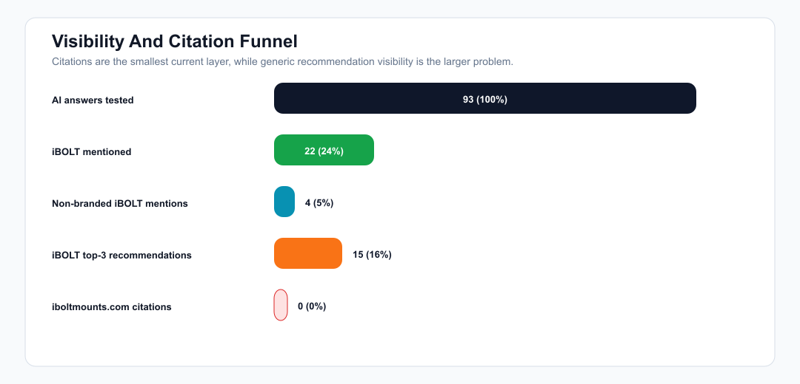
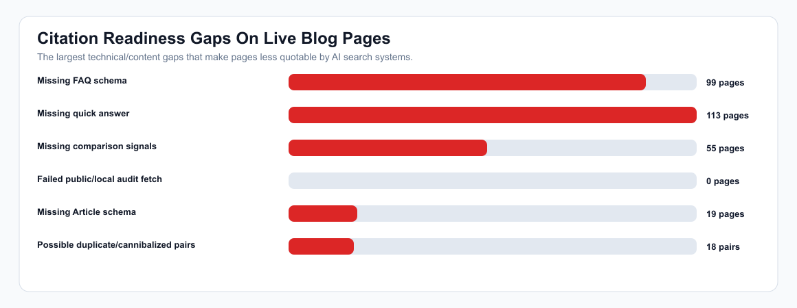
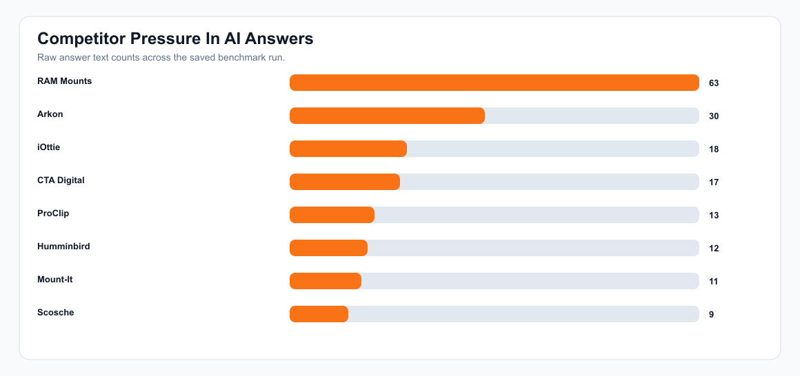
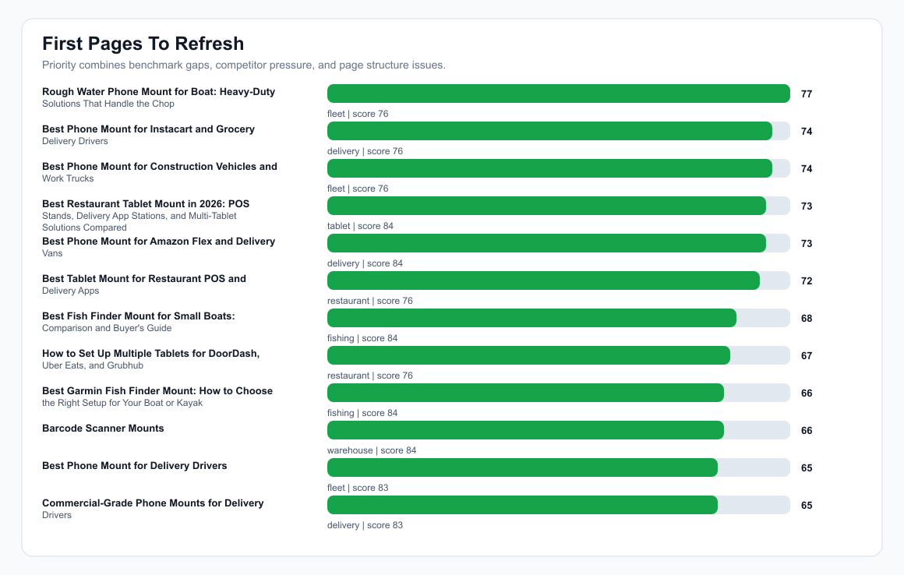

iBOLT AI Citation And Visibility Strategy
Bottom line: yes, citation rate should go up, but the immediate priority is broader non-branded recommendation visibility. The current run shows iBOLT is known when named, while generic buyer prompts still default to competitors.
AI answers
93
saved benchmark run
Mention rate
24%
22/93 answers
Non-branded mention
5%
4/75 answers
Top-3 rate
16%
15/93 answers
Citation rate
0%
0/93 answers
Catalog product rows
8/93
actual product alias matches
Live page score
75
average AI citability score
Missing FAQ schema
99
audited pages
Unlinked products
187/343
55% of catalog
Citation rate is most important on search-connected AI surfaces. For normal consumer-model answers, we should also track mention rate, top-3 recommendation rate, product/family signal rate, and competitor-only rows.
Graphs




Workstreams
| Priority | Owner | Workstream | Action | Success Metric |
|---|---|---|---|---|
| 1 | Jacob/app | Raise non-branded recommendation rate 10 of the top 10 gap queries have zero iBOLT mention rate. | Refresh the mapped pages with query-exact answer blocks, explicit recommended iBOLT products, and competitor tradeoff sections. | Non-branded iBOLT mention rate moves from 5% to 15%+ on the next comparable benchmark. |
| 2 | Jacob/app | Make pages citable 99 audited blog pages are missing FAQ schema, 113 are missing quick answers, and 55 lack comparison signals. | Batch-add FAQPage schema, short answer blocks, Article/BlogPosting schema, descriptive image alt text, and cleaner answer-first sections. | Average live page citability score moves from 75 to 82+. |
| 3 | SEO contractor | Earn external citations and mentions The benchmark saw 0 target-domain citations and 0 source-url rows, so on-site content is not being cited yet by the tested consumer models. | Pitch/list iBOLT on industry sites, comparison pages, buyer guides, fleet/warehouse/restaurant resources, and product-review articles that AI search systems may cite. | Target-domain citation rate reaches 3% to 5% first, then 10%+ in search-connected benchmarks. |
| 4 | Jacob/app + SEO contractor | Displace RAM, Arkon, iOttie, ProClip, and marine defaults RAM Mounts: 63; Arkon: 30; iOttie: 18; CTA Digital: 17; ProClip: 13 appearances in raw answer text. | Use fair comparison blocks on matching pages and have SEO contractor secure third-party mentions that compare iBOLT in those categories. | Competitor-only rows drop from 68 to below 50 on comparable prompts. |
| 5 | Jacob/app | Fix product entity signals 187/343 products are not linked from detected blog content. Actual catalog product aliases appeared in 8/93 answers, while strict stored product mentions were 0/93. | Use exact product titles in product modules, backfill product relationships, and rotate underlinked product families into relevant posts. | Manual product/family signal rows move from 30/93 to 45/93 and catalog product alias rows move from 8/93 to 20/93. |
Competitor Pressure
| Brand | Raw Answer Appearances |
|---|---|
| RAM Mounts | 63 |
| Arkon | 30 |
| iOttie | 18 |
| CTA Digital | 17 |
| ProClip | 13 |
| Humminbird | 12 |
| Mount-It | 11 |
| Scosche | 9 |
Highest Query Gaps
| Opportunity | Query | Category | Avg Score | Mention Rate | Competitors |
|---|---|---|---|---|---|
| 97 | best tablet mount | tablet | 0 | 0% | RAM Mounts, Arkon, Tackform, Lamicall |
| 96 | best multi tablet mount | restaurant | 3 | 0% | RAM Mounts, Mount-It, Arkon |
| 96 | best heavy duty vehicle phone mount | fleet | 7 | 0% | RAM Mounts, Arkon, ProClip, Tackform |
| 94 | best phone mount for Amazon Flex and delivery vans | delivery | 7 | 0% | RAM Mounts, ProClip, Arkon, iOttie |
| 89 | best phone mount for Instacart and grocery delivery drivers | delivery | 0 | 0% | RAM Mounts, iOttie, Scosche, Peak Design |
| 88 | best phone mount for construction vehicles and work trucks | fleet | 3 | 0% | RAM Mounts, ProClip, Arkon, Tackform |
| 87 | best phone mount for delivery drivers | fleet | 0 | 0% | RAM Mounts, iOttie, Scosche, Belkin |
| 87 | commercial grade phone mount for delivery drivers | delivery | 0 | 0% | RAM Mounts, Arkon, iOttie, Scosche |
| 87 | best fish finder mount for small boat | fishing | 0 | 0% | RAM Mounts, YakAttack, Scotty, Humminbird |
| 87 | best fish finder | fishing | 0 | 0% | Garmin, Lowrance, Humminbird |